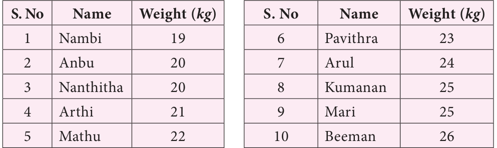

We first collect data, record it and organise them. To understand this, consider an example which deals with the weights of 10 students of class VII. These are collected to know whether the weights of students are appropriate to their heights. The data is given below. ●● Anbu-20 kg; Nambi-19 kg; Nanthitha- 20 kg; Arul- 24 kg; ●● Mari-25 kg; Mathu-22 kg; Pavithra \(- 23\) kg; Beeman- 26 kg; ●● Arthi-21 kg; Kumanan-25 kg. Let us try to answer the following questions.
- (i)Who is the least weight of all?
- (ii)How many students weigh between 22 kg to 24 kg?
- (iii)Who is the heaviest of all?
- (iv)How many children are above 23 kg and how many are below 23 kg?
The data mentioned above is not easy to understand.
the questions. Observe the following table.

Now we can answer the above questions easily. Hence it is essential to organise the data to obtain any kind of inferences from the data.
Organisation of data is helpful to understand quickly and get an overall view of data. It becomes easy to understand and interpret which in turn also helps to take decision accordingly.